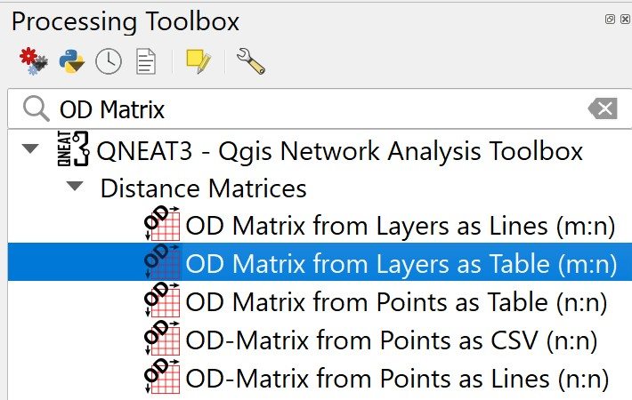
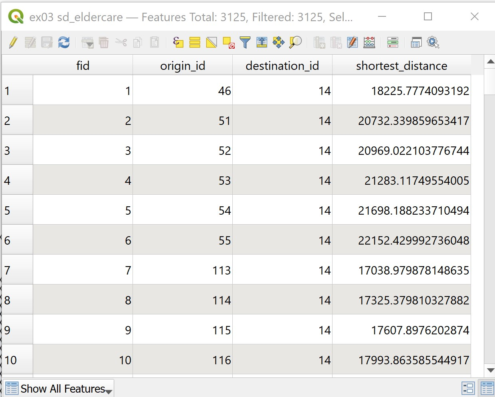

11 Geography of Accessibility: QGIS methods
Accessibility is the measure of the capacity of a location to be reached from, or to be reached by, different locations. It is a key element in urban planning and management since it is a direct expression of mobility either in terms of people, freight, or information within a city or between cities.
Well-developed and efficient urban transport systems offer high accessibility levels, while less-developed ones have lower levels of accessibility. Thus, accessibility is linked with an array of economic and social opportunities.
All locations are not equal because some are more accessible than others, which implies inequalities. Thus, accessibility is a proxy for spatial inequalities.
In this hands-on exercise, you will gain hands-on experience on using both build in and plug-in network analysis functions of QGIS to derive accessibility indexes. By the end of this hands-on exercise, you will be able to:
- derive hexagon layer,
- extract, clean and process network data from roads layer of OSM data, and
- performing network accessibility by using network analysis tools of QNEAT plug-in.
11.1 Setting the scene
11.1.1 The Task
In this hands-on exercise, you are tasked to derive an accessibility to eldercare centre map of Singapore.
11.1.2 The Data
Three major data sets will be used in this hands-on exercise. They are:
- Master Plan 2014 Subzone Boundary from URA. This data can be downloaded from data.gov.sg.
- Eldercare services from Ministry of Social and Family Development. This data can be downloaded from data.gov.sg.
- Roads data from OpenStreetMap (OSM) data sets. OSM data sets can be downloaded from Geofabrik’s free download server.
Note: I recommend this download site instead of bbbike because I found out that the quality of the data provided by Geofabrik is better than bbbike.
11.2 Data Preparation
11.2.1 Start a new QGIS Project
DIY: Using the steps you had learned in previous hands-on exercise, start a new QGIS project. Save the project and give it a name (i.e. Hands-on_Ex10).
Reminder: Ensure that svy21 projection system is used.
11.2.2 Preparing base layer for the study area
DIY: Download Master Plan 2014 Subzone Boundary from data.gov.sg and import it into QGIS. Then, save the GIS layer into GeoPackage format. Name the output layer as
mpsz2014.
11.2.3 Preparing eldercare layer
DIY: Download eldercare services data from data.gov.sg and import it into QGIS (Ideally, the shapefile version should be used). Then, save the GIS layer into GeoPackage format. Name the output layer as
eldercare.
11.2.4 Extracting and preparing road network layer
11.2.4.1 Selecting all road network with the study area
DIY: Using appropriate QGIS function(s) you had learned from previous hands-on exercise, clip the road network with Singapore mainland (excluding outer insland, Pulau Tekong and Pulau Ubi). Save the GIS layer into GeoPackage format. Call the layer
all_roads.
11.2.5 Extracting motor vehicle road network
DIY: Using appropriate QGIS function(s) you had learned from previous hands-on Exercise, extract motor vechicle road network (i.e. motorway, motorway_link, primary, primary_link, secondary, secondary_link, tertiary, tertiary_link, residential, trunk and trunk_link) from the all_roads layer. Save the GIS layer into GeoPackage format. Name the layer
roads.
Be warn: The original data is in wgs84. For the purpose of network analysis, all network should be in projected coordinates system.
Reminder: Remove all the source data from QGIS project before continue to the next section.
11.3 Analytical Hexagon
In GIS analysis, regularly shaped grids is used for many reasons such as normalizing geography for mapping or to mitigate the issues of using irregularly shaped polygons created arbitrarily (such as county boundaries or block groups that have been created from a political process). Regularly shaped grids can only be comprised of equilateral triangles, squares, or hexagons, as these three polygon shapes are the only three that can tessellate (repeating the same shape over and over again, edge to edge, to cover an area without gaps or overlaps) to create an evenly spaced grid.

Though the square (fishnet) grid is the predominantly used shape type in GIS analysis and thematic mapping, there are ways in which hexagons may be better suited for your analysis based on the nature of your question.
Hexagons reduce sampling bias due to edge effects of the grid shape, this is related to the low perimeter-to-area ratio of the shape of the hexagon. A circle has the lowest ratio but cannot tessellate to form a continuous grid. Hexagons are the most circular-shaped polygon that can tessellate to form an evenly spaced grid.

11.3.1 Creating hexagon layer
Now, we are going to create a hexagon layer by using mpsz layer as the based. The hexagon distance is 250m.
- From the menu bar, select Vector -> Research Tools -> Create Grids.
Create Grids dialog window appears.
- For Grid type: select Hexagon (Polygon) from the drop down list.

- For Grid extend:, select Calculate from Layer ->
mpsz

- For Horizontal spacing, type 500.
- For Vertical spacing, type 500.
Question: Do you know why 500 is used?
- For Grid CRS, make sure that EPSG 3414 is used.
When you are ready to run the process,
- Click on Run button.
Reminder: Read the Log before closing the dialog window.
- Click on Close button.
Notice that a new temporary layer called Grid is added on the Layer pane and display on Map window.

11.3.2 Editing the hexagon layer
DIY: Using appropriate QGIS functions, edit the temporary
Gridlayer until it looks similar to the screenshot below.

11.3.3 Saving the hexagon layer
DIY: Using the steps you had learned in previous hands-on exercise, save the edited
Gridlayer into GeoPackage format. Give the layer a name (i.e.hexagon)
Before you move on to the next section, remember to remove the temporary Grid layer.
11.3.4 Computing hexagon centroid
In general, network analysis required the demand in a point feature. Hexagon, on the other hand, is a polygon feature. In order to meet the analysis need, we will compute the centroids of the hexagons.
- From the menu bar, select Vector -> Geometry Tools -> Centroids.
Centroids dialog window appears.
- For Input layer, select hexagon from the drop-down list.
When you are ready to run the process,
- Click on Run button.
Reminder: Read the log before closing.
- Click on Close button.
Notice that a new temporary layer called Centroid is added onto Layers panel and display on Map view.

11.3.5 Saving the centroid layer
DIY: Using the steps you had learned in previous hands-on exercise, save the temporary
Centroidslayer into GepPackage format. Name the newly created layerhex_centroid.
Before you move on to the next section, remember to remove the temporary Centroids layer.
11.4 Network Accessibility Analysis with NEAT3 Plugin
In this section, you will learn how to perform network accessibility analysis by using QGIS Network Analysis Toolbox (QNEAT3) plugin.
11.4.1 Installing QNEAT3 plugin.
Before getting started, you need to install QNEAT3 plugin.
- From the menu bar, select Plugins -> Manage and Install plugins.
Plugins dialog window appears.
- At the query, type QNEAT3.
Notice that QNEAT3 appears on the search output list.
Click on QNEAT3.
Click on Install Plugin button.
When the installation is completed, close the dialog box by
- click on Close button.
11.4.2 Working with OD Matrix tool
Next, we will use the Origin-Destination Matrix (OD Matrix) tool of QNEAT3 plugin to calculate the distances between hexagon centrois (as the demand points) and eldercare centres (as the supply points).
From the menu bar, click on Processing -> Toolbox
At the Search pane, type
OD Matrix.
You screen should look similar to the screenshot below.

- Click on OD Matrix Layers as Table (m:n).
OD Matrix Layers as Table (m:n) dialog window appears.
For Network Layer, select
roadsfrom the drop-down list.For From-Point Layer, select
hex_centroidfrom the drop-down list.For Unique Point ID Field, select
fidfrom the drop-down list.For To-Point Layer, select
eldercarefro mthe drop-down list.For Unique Point ID Field, select
fidfrom the drop-down list.For Optimization Criterion, select
Shortest Path (distance optimization)from the drop-down list.For Entry Cost calculation method, select
Ellipsoidalfrom the drop-down list.For Direction field, select
onewayfrom the drop-down list.For Value for forward direction, type
F.For Value for backward direction, type
T.For Value for both direction, type
B.For Topology tolerance, type 0.5 (i.e. 0.5 m).
The completed dialog widnow should look similar to the screenshot below.
When you are ready to run the process.
- At the OD Matrix dialog window, click on Run button.
Be patient, the process is computationally intensive.
Reminder: Read the log before closing it.
When you are ready to close the dialog window.
- Click on Close button.
Notice that a new temporary table called Output OD Matrix is added onto Layers panel.
- At the Layers panel, right-click on
Output OD Matrixand select Open Attribute Table from the context menu.
A data table look similar to the screenshot below appears.
Question: Do you know what are the values of these fields?
DIY: Using the steps you had learned, save the temporary Output OD Matrix table as GeoPackage format. Name the layer
OD_eldercare.
11.4.3 Extracting shortest distance pairs
Next, we will use the SQL tool of QGIS to select destination points with the shortest distance.
- At the Search pane of Processing Toolbox, type
SQL.
SQL function appears on the list.

- Double-click on Execute SQL of Vector general.
Execute SQL dialog window appears.
For Additional input datasources, select on the button at the right end.
Click on the checkbox Output OD Matrix.

Click on OK button.
At SQL query panel, type the following SQL

- For Geometry type, select
No Geometryfrom the drop-down list.
Notice that a temporary table called SQL Output is added onto Layers panel. It consists of four fields. The values in shortest_distance field are shortest distance between demand points and its nearest eldercare centre.

DIY: Using the steps you had learned, save the temporary
SQL Outputtable as GeoPackage format. Name the layeracc_eldercare.
11.4.4 Mapping Accessibility Values
In this section, we are going to use mapping function of QGIS to show the distribution of accessibility to eldercare
11.4.4.1 Creating a duplicate layer
Before we getting started, let us create a duplicate copy of hexagon layer
- At the Layers panel, right-click on
hexagonlayer and select Duplicate Layer from the context menu.
A new layer called hexagon copy is added onto Layers panel.
- Rename the layer to
Accesibility to eldercare.
11.4.4.2 Performing relational join.
Before we can prepare the choropleth map, we need to join acc_eldercare data table to the newly created Accesibility to eldercare by using fid of acc_eldercare data table and fid of Accessibility to eldercare attribute table as unique join fields.
- At the Layer panel, right-click on
Accesibility to eldercarelayer and select Properties from the context menu.
The Properties dialog window appears.
At the option panel, click on Joins.
Click on + button to add a join.
The Add Vector Join dialog window appears.
For Join layer, select
acc_eldercarefrom th drop-down list.For Join field, select
fidfrom the drop-down list.For Target field, select
fidfrom the drop-down lsit.Keep the checkbox in front of Cache join layer in memory checked.
- When you are ready, click on OK button.
11.4.4.3 Preparing choropleth map
DIY: Using the steps you had learned, prepare a choropleth map showing the distribution of accessibility to eldercare centres.
Your choropleth map should look similar to the screenshot below.